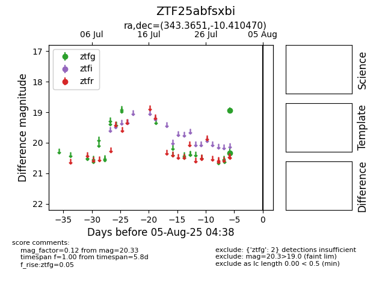

Target ZTF25abfsxbi at 2025-08-05 04:38, see:
FINK: fink-portal.org/ZTF25abfsxbi
Lasair: lasair-ztf.lsst.ac.uk/objects/ZTF25abfsxbi
ALeRCE: alerce.online/object/ZTF25abfsxbi
alt names
ZTF25abfsxbi (ztf,fink)
coordinates:
equatorial (ra, dec) = (343.3651,-10.41047)
galactic (l, b) = (58.2938,-57.59623)
photometry
last ztfg=20.33
2 ztfg detections
